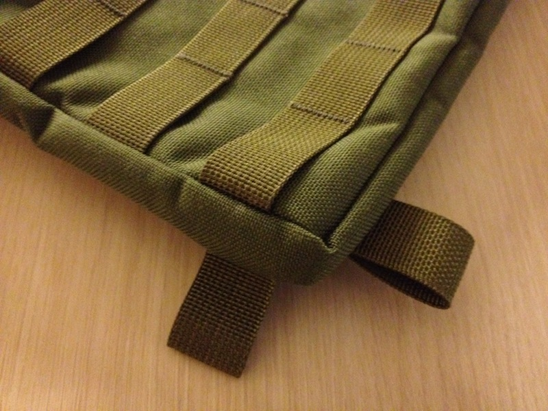
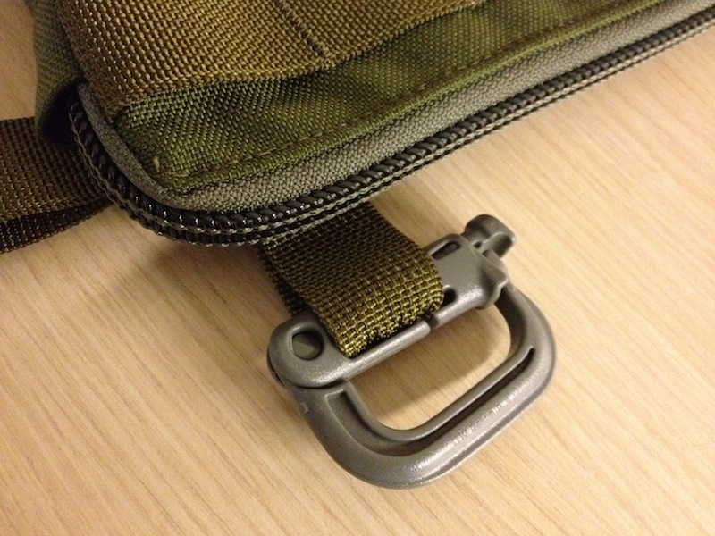
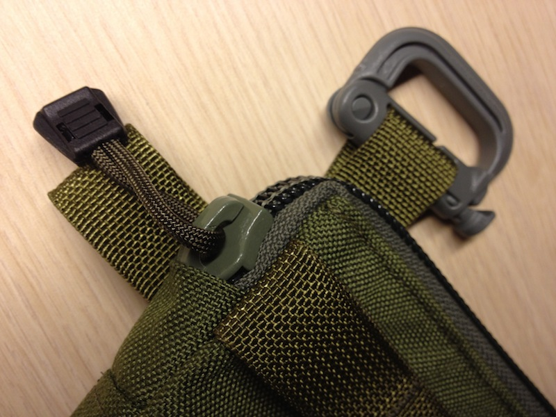

Available Now / Olive Drab
Made in the USA - $70
Go to the store →
Setting up the MOLLE Panel
There's not much to do to set up the MOLLE Panel - regardless, a few notes on fitment and adjustability are provided here.
Grimlocs
The included Grimlocs are intended to be attached to the MOLLE Panel using the strap attachment loops. The strap loop fits inside a special channel in the Grimloc to prevent sliding or twisting. There are eight strap attachment loops, two on each corner of the bag. The bag will hang on the body differently depending on where you place the carabiners and by extension the shoulder strap.
Strap Loops

The material used for the strap attachment loop is thick, the same as on the bag-face ladder webbing. The fit of the Grimloc with the strap attachment loop will be tight. The thicker material and the tight fit give the best strength and stability for the bag.
The Grimloc / Strap Loop Fit is Tight

Captured versus Un-Captured Buckles
The shoulder strap buckles are "un-captured". This gives a greater range of adjustability than a captured buckle. An un-captured buckle allows the shoulder strap to be shortened and used as a handle, or extended to nearly the full length of the strap. This leaves a free end on both sides of the strap that needs to be policed (if you find a free end to be bothersome).
Un-captured Buckle is More Adjustable

The alternative is to use a captured buckle. Though a captured buckle allows the strap to extend to nearly its full length, the strap can't be shortened very much. In the interest of flexibility and utility, the MOLLE Panel shoulder strap uses un-captured buckles.
Captured Buckle on a Prototype Strap

The Zipper
The bag's zipper is a very stout "No. 10" model. It wraps completely around the top of the MOLLE Panel and runs a short distance down the side. This allows the mouth of the bag to accept objects as wide as the bag itself, but it comes with a caveat. The zipper has to make a sharp "turn" around the corner of the bag. In a new bag, the zipper can seem to be held up or hard to move around the bag's corner. This is especially the case when holding an unloaded bag in the hand and working the zipper by the pull tab. A sharp tug on the pull tab with the bag worn or just lightly loaded is usually enough to get the zipper clear of the "turn".
The Zipper and the "Turn"

Extending the MOLLE Panel
It is easy to extend the MOLLE Panel into something completely unique, well suited to your own requirements. Turning a Panel into a bandolier demonstrates this:

Made in the USA